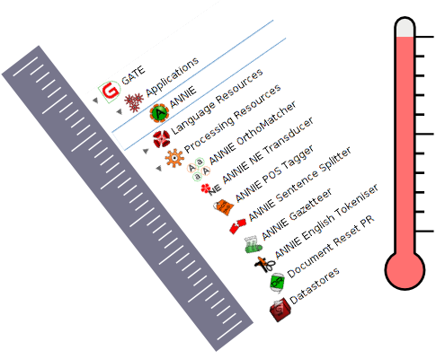

ANNIE is a named entity recognition pipeline that identifies basic entity types, such as Person, Location, Organization, Money amounts, Time and Date expressions.
This pipeline combines the basic ANNIE named entity system with taggers to recognise numeric expressions (digits and words) and to annotate and normalise measurement expressions with features giving their value in SI units.
| Default annotations | |
| :Person | Standard named entity types |
| :Location | |
| :Organization | |
| :Date | |
| :Address | Includes email and IP addresses as well as street addresses |
| :Measurement | Measurement expressions, with features giving the value and unit of the measurement, both in the original form specified in the document and in a form normalized to SI units |
| Additional annotations available if selected | |
| :Money | Monetary amounts |
| :Percent | Expressions representing percentages |
| :Token | The individual tokens of the text, with "category" feature for POS |
| :SpaceToken | The spaces between tokens |
| :Sentence | Sentences detected by the sentence splitter |
| :Ratio | Expressions denoting a ratio rather than a simple measurement, typically percentages but also expressions like "300 parts per million" |